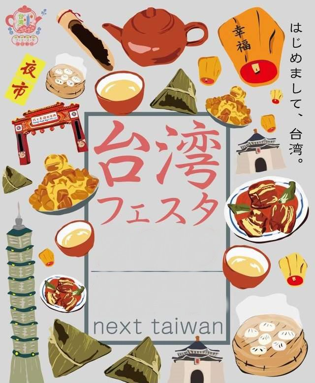
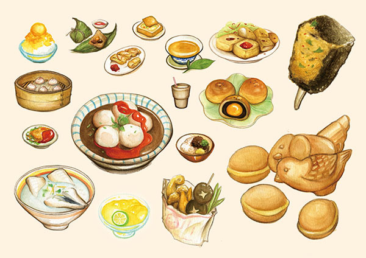

俗話說民以食為天，一個地區的人文特色可以由吃的東西看出來，每一個地方都有各自屬於當地的菜色,例如：韓國活章魚、印度炸青蛙腿、台灣豬血糕、日本生魚片等等，這些都是我們口耳相傳、耳熟能詳的食物，只是除了這些東西，這世界上還有許多我們沒看過或沒吃過的食物，所以現在我們將介紹台灣的美食。
 
台灣可以說是美食的天堂，台灣的小吃聞名國際，每一位外國遊客到了台灣都說不怕沒東西吃，早上起床走出飯店，到街上阿婆的叫賣聲不斷，隨著陣陣油條的焦味,走進去裡面買了個燒餅、油條配豆漿，出來之後還可以去市場跟阿婆買個水果，然後在路上散步,觀賞台灣的風景，到了晚上吃完晚餐，突然想吃消夜，晚上12點前還有夜市可以買消夜吃，所以一天24小時基本上無時無刻都有東西可以吃。根據北中南各地區的氣候以及地方特色,吃的風味也不一樣，好好品嘗今天的美食吧~！